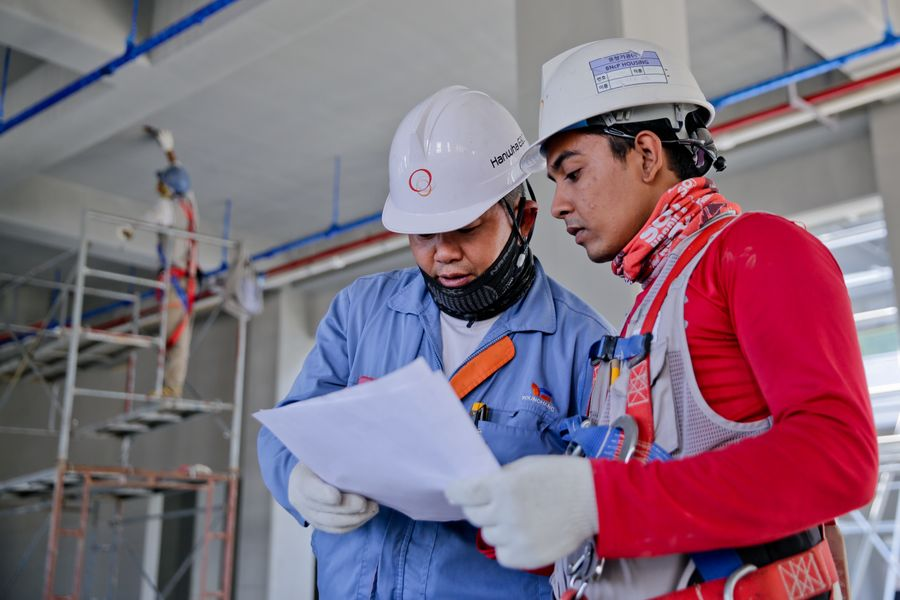
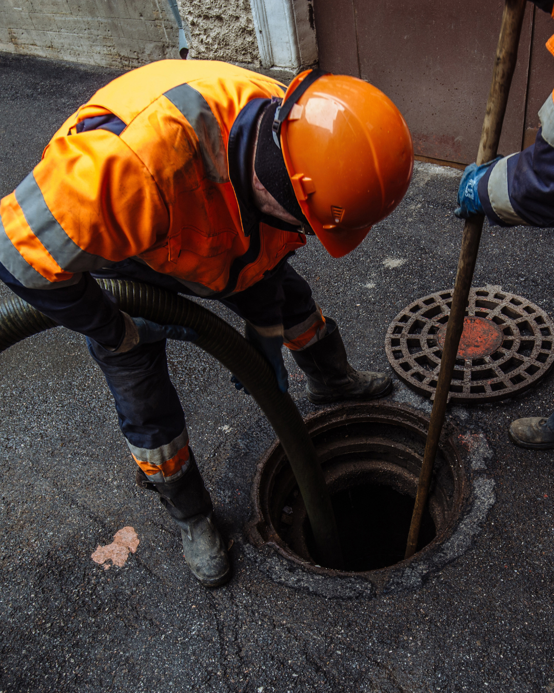
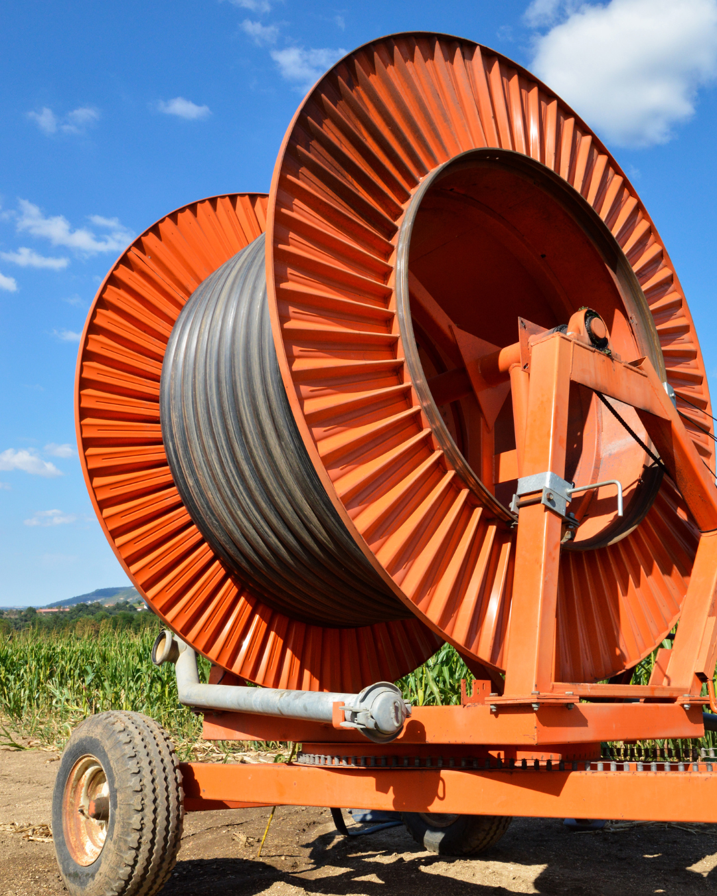
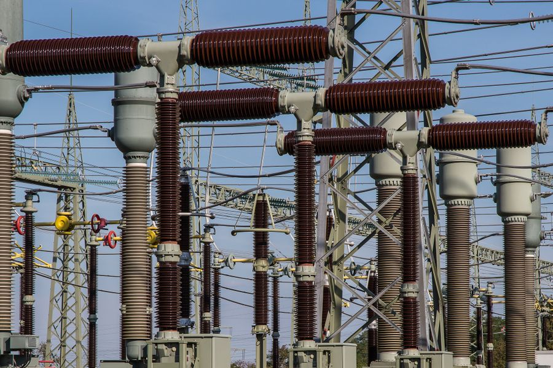
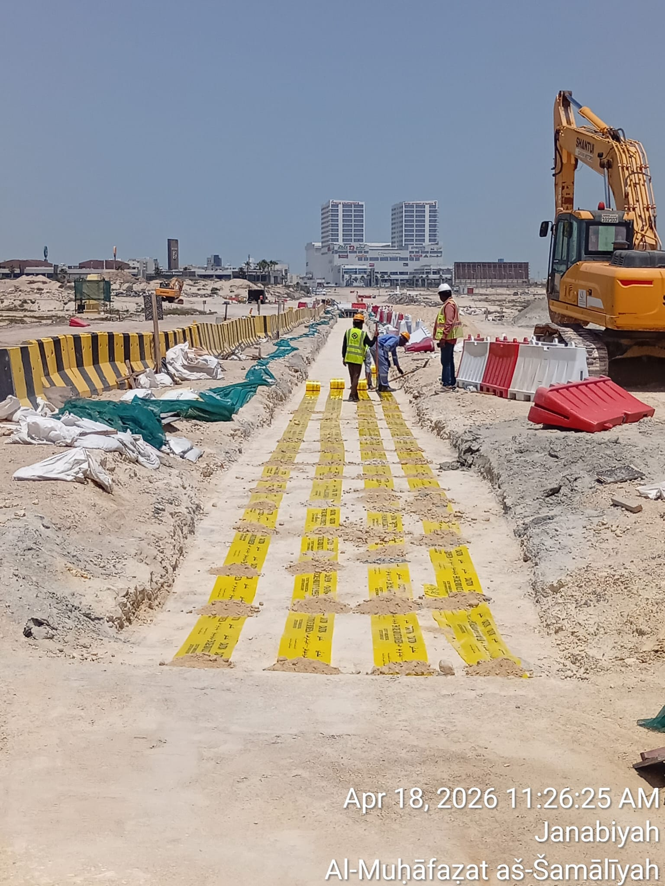

Health & safety
Guided by ISO 45001 and site-specific protocols. HDD crews are trained on live-corridor procedures with a commitment to safe delivery and a proven accident-free record.
Building Your Digital Experience...

Kapisha Trenchless & Contracting Company W.L.L. plans and executes horizontal directional drilling, micro tunneling, and civil packages across Bahrain — with crews, plant, and controls aligned to local authority requirements.
Where we work
KTCC W.L.L is a Bahrain-based trenchless and civil contractor focused on underground utilities and corridor work with minimal surface disruption. From dense urban routes to open corridors, we support government and private clients with engineered crossings and integrated civil scope.
We combine recognised trenchless practice with local knowledge of ground conditions, authorities, and delivery expectations across the Kingdom.
Contact our team
Registration & systems
We are government registered and licensed for civil and trenchless works in Bahrain. Our integrated management systems are certified to ISO 9001:2015, ISO 14001:2015, and ISO 45001:2018 — supporting quality, environmental, and occupational health & safety expectations on live sites.

What we deliver

Horizontal directional drilling for cables, ducts, and carriers — including large-diameter HDD up to 48" and 500m+ spans for EWA and Oil & Gas corridors.
Learn more
Precision drives and pipe jacking for gravity sewers, ducts, and sleeve crossings where open-cut is constrained.
Learn more
Sewer, storm water, and road works — coordinated civil packages with reinstatement aligned to authority criteria.
Learn more
Transmission mains, tie-ins, and corridor civils for potable and non-potable networks.
Learn more
Civil works for 11KV through 400KV corridors — ducts, pits, and route preparation coordinated with utility programmes.
Learn more
Supporting structures, substation civils, and building packages alongside trenchless and corridor scope.
Learn moreHow we work

Guided by ISO 45001 and site-specific protocols. HDD crews are trained on live-corridor procedures with a commitment to safe delivery and a proven accident-free record.

Quality, environmental, and safety systems are integrated under one IMS policy — supporting audit readiness for Ministry of Works and client prequalification.

We plan bore profiles, utility protection, and pullback sequencing so roads, landscapes, and live infrastructure stay intact where the method allows.

Deliverables are coordinated with Electricity & Water Authority programmes, Ministry of Works expectations, and Bahrain safety regulations on active corridors.

Bore planning, conflict checks, pit layouts, and mud programmes are tailored to geology and corridor constraints before mobilisation.

As a Manama-based W.L.L., we bring local knowledge of ground conditions and authority processes together with recognised trenchless practice.
Share your route, utility protection needs, or civil–trenchless package — our team will respond with scope aligned to your programme.